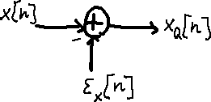

Quantization Basics
수업 개요
이번 챕터는 "몇 비트가 더 작으냐"보다 "어떤 형식이 실제 서빙 경로를 끝까지 통과하느냐"를 먼저 묻는다. 근거도 둘로 나눠서 본다. 메모리 예산과 품질 위험은 [식 1], [식 2], 그리고 양자화 오차를 시각화한 [I1]로 설명하고, backend 호환성은 서버 엔진 문맥의 [S1], offload의 [S2], compile 산출물의 [S3], device target의 [S4]로 설명한다. 이 분리를 지키면 "INT4가 더 작으니 무조건 더 좋다" 같은 단정이 왜 위험한지 보인다.
학습 목표
- INT8, INT4, FP8의 weight 메모리 예산 차이를 직접 계산할 수 있다.
- INT4가 품질과 latency에서 왜 더 공격적인 선택인지 식과 실행 경로 관점으로 설명할 수 있다.
- 서버 GPU와 NPU 배포에서 양자화 형식을 고르는 우선순서가 왜 달라지는지 말할 수 있다.
수업 전에 생각할 질문
- 8B 모델을 10GB 남은 장치에 올려야 한다면, 어떤 형식이 수식상으로 먼저 후보가 되는가?
- INT4 모델을 만들었는데 속도가 그대로라면, bit-width 외에 어떤 항목을 먼저 의심해야 하는가?
- FP8을 "중간값"이 아니라 "별도 후보군"으로 봐야 하는 이유는 무엇인가?
강의 스크립트
장면 1. 먼저 예산표를 펼친다
교수자: 양자화를 설명할 때 제일 먼저 해야 할 일은 benchmark를 찾는 게 아니라 장치 예산을 계산하는 겁니다. weight 저장 공간은 비트폭에 거의 비례합니다.
[식 1] Weight Memory Budget
교수자: 8B 파라미터 모델을 예로 들면, FP16은 대략 16GB, INT8은 8GB, FP8도 8비트 계열이라 대략 8GB, INT4는 4GB 수준입니다. 이 계산만으로도 "한 장치에 들어가는가", "배치 여유가 생기는가"를 빠르게 걸러낼 수 있습니다.
학습자: 그러면 숫자만 보면 INT4가 제일 좋아 보이는데요.
교수자: 메모리 예산만 보면 맞습니다. 하지만 그건 아직 절반만 본 겁니다. 수식이 알려 주는 것은 저장 공간이고, 서비스가 궁금해하는 것은 품질과 end-to-end latency입니다.
장면 2. 품질 손실은 눈금 간격으로 읽는다
교수자: 품질 쪽에서는 "칸이 몇 개냐"를 보는 편이 더 정확합니다. 같은 범위를 더 적은 칸으로 나누면 한 칸의 폭이 커지고, 그만큼 오차 위험도 커집니다.
[식 2] Quantization Step Size
교수자: 여기서 바로 정량 비교가 나옵니다. 같은 범위를 가정하면 INT8의 분모는 255이고, INT4의 분모는 15입니다. 즉 INT4의 눈금은 INT8보다 대략 17배 거칩니다. [I1]의 양자화 오차 그림을 함께 보면, 비트폭이 줄수록 원래 연속값이 더 거친 계단으로 투영된다는 점을 직관적으로 확인할 수 있습니다. 그래서 이 챕터에서는 "INT4가 INT8보다 품질 리스크가 크다"는 문장을 외부 backend 문서가 아니라 [식 2]와 [I1]에 직접 연결해서 읽습니다.
학습자: 그럼 FP8은 어디에 놓아야 하나요?
교수자: 이 챕터에서는 FP8을 "8비트 예산을 유지하는 별도 후보군"으로 둡니다. [식 1]상 메모리 예산은 INT8과 같은 8비트 계열이고, INT4처럼 4비트까지 공격적으로 내려가지는 않습니다. 다만 실제 품질 우위나 속도 우위는 backend와 모델 분포에 따라 달라지므로, FP8을 무조건적인 승자로 말하지 않고 "지원될 때 테스트할 만한 8비트 후보"로만 정리하는 것이 안전합니다.
장면 3. 속도는 bit-width 하나로 닫히지 않는다
학습자: 그런데 현업에서는 "메모리가 줄면 당연히 빨라지는 것 아닌가"라는 말도 많이 하잖아요.
교수자: 그 말이 맞는 구간도 있지만, 서비스 latency는 weight 읽기 시간 하나로 끝나지 않습니다. 실측할 때는 최소한 L_e2e = L_kernel + L_dequant + L_layout + L_fallback처럼 나눠 봐야 합니다. 이 식은 교과서 공식이라기보다 디버깅 체크리스트입니다.
교수자: 여기서 중요한 건 출처 역할 분리입니다. dequantize와 layout은 양자화 경로에서 추가될 수 있는 변환 항목이고, fallback은 backend 문서가 직접 가리키는 위험입니다. ONNX Runtime QNN 문서는 execution provider가 graph를 특정 backend로 넘기는 구조를 설명하므로, 지원되지 않는 연산이나 형식이 남아 있으면 일부 경로가 fallback될 수 있다는 사실을 받쳐 줍니다 [S2]. Qualcomm AI Hub compile examples는 모델을 장치용 산출물로 바꾸는 compile 단계 자체가 따로 있다는 점을 보여 줍니다 [S3]. OpenVINO NPU 문서는 device target과 실행 모드가 배포 경로에 직접 영향을 준다는 사실을 보여 줍니다 [S4]. 따라서 "INT4인데 안 빨라졌다"는 현상은 bit-width보다 offload 범위, compile 결과, device target부터 확인해야 합니다.
시각 자료 1. 양자화 형식이 실제 실행 경로로 내려가는 순서
flowchart LR
A["형식 선택<br/>INT8 / INT4 / FP8"] --> B["메모리 계산<br/>[식 1]"]
A --> C["품질 위험 점검<br/>[식 2], [I1]"]
A --> D["execution provider 확인<br/>[S2]"]
D --> E["compile 산출물 확인<br/>[S3]"]
E --> F["device target 확인<br/>[S4]"]
F --> G["실측 latency 확인<br/>kernel / dequant / fallback"]교수자: 이 그림의 핵심은 순서입니다. 품질과 메모리는 형식 자체로 먼저 따지고, 실제 속도는 backend 경로를 통과한 뒤에야 판단합니다.
장면 4. 왜 서버에서는 8비트 계열부터, NPU에서는 backend부터 보나
교수자: 이제 운영 판단으로 넘어가 봅시다. 여기서는 사실과 추론을 분리해서 말해야 합니다.
교수자: 사실 1. [식 1]만 보면 FP16 8B 모델은 16GB, 8비트 계열은 8GB, INT4는 4GB입니다. 사실 2. [식 2]만 보면 INT4는 같은 범위에서 INT8보다 훨씬 거친 눈금을 씁니다. 이 두 사실을 합치면, 품질 민감한 서버 서비스에서는 8비트 계열이 첫 기준선이 되기 쉽다는 운영적 추론이 나옵니다. 특히 vLLM 문서처럼 서버 서빙 엔진이 양자화 경로를 기능으로 제공하는 환경에서는 [S1] 8비트 계열 실험이 운영 기본선이 되기 쉽습니다. 여기서 [S1]은 "서버 엔진 문맥"을 받치는 출처이지, INT8이 보편적으로 최고라는 품질 논문이 아닙니다.
학습자: 그럼 서버에서는 INT8을 먼저 보고, FP8은 그다음 후보로 둔다는 뜻인가요?
교수자: 품질 보수성이 중요하고 backend 제약이 없지 않다면 그렇게 정리하는 편이 안전합니다. INT8은 FP16 대비 weight 메모리를 절반으로 줄이면서도, [식 2] 기준으로 4비트만큼 공격적으로 눈금을 넓히지 않습니다. FP8은 8비트 예산을 유지하는 다른 후보이므로, backend가 지원되고 품질 테스트에서 이득이 보일 때 비교군으로 올립니다. 반대로 메모리 압박이 매우 강하면 INT4를 볼 수 있지만, 그때는 품질과 fallback 비용을 더 빡빡하게 검증해야 합니다.
교수자: NPU 쪽은 순서가 더 엄격합니다. QNN EP는 어떤 graph를 backend로 넘길지 [S2], AI Hub는 어떤 compile 산출물을 만들어야 하는지 [S3], OpenVINO는 어떤 device target과 모드로 실행해야 하는지 [S4]를 설명합니다. 따라서 NPU-friendly quantization의 첫 질문은 "가장 작은 형식이 무엇인가"가 아니라 "어떤 형식이 offload, compile, target을 통과하는가"입니다.
시각 자료 2. 서버 판단과 NPU 판단의 출발점 차이
flowchart TD
A["서버 GPU 서빙"] --> B["메모리 예산 계산<br/>[식 1]"]
B --> C["품질 민감도 확인<br/>[식 2], [I1]"]
C --> D["8비트 계열 기본선 실험<br/>[S1]"]
D --> E["INT4는 메모리 압박이 강할 때 추가 검증"]
F["NPU 배포"] --> G["EP 지원 확인<br/>[S2]"]
G --> H["compile 산출물 확인<br/>[S3]"]
H --> I["device target 확인<br/>[S4]"]
I --> J["통과한 형식 중 메모리/품질 비교"]장면 5. 디버깅은 숫자보다 경로를 먼저 본다
학습자: 팀원이 "INT4로 바꿨는데 latency가 그대로예요"라고 말하면 어떻게 보시나요?
교수자: 저는 네 단계로 봅니다.
교수자: 첫째, execution provider가 실제로 얼마나 offload했는지 봅니다. 이건 [S2]의 역할입니다.
교수자: 둘째, compile 산출물이 기대한 형식과 타깃 장치용으로 생성됐는지 봅니다. 이건 [S3]의 역할입니다.
교수자: 셋째, device target과 실행 모드가 의도한 NPU 경로인지 봅니다. 이건 [S4]의 역할입니다.
교수자: 넷째, 그 다음에야 구간별 latency를 나눠 봅니다. L_kernel은 줄었는데 L_dequant나 L_fallback이 늘었으면, bit-width 이득이 서비스 전체로 번지지 못한 겁니다.
학습자: 결국 "INT4 모델 파일이 있다"와 "INT4 경로가 빠르다"는 다른 말이네요.
교수자: 정확합니다. 전자는 아티팩트 상태이고, 후자는 실행 경로 상태입니다.
자주 헷갈리는 포인트
- INT4가 INT8보다 메모리를 더 많이 줄인다는 사실은 [식 1]의 결론이고, 더 빠르다는 결론은 아니다.
- INT4의 품질 리스크가 더 높다는 말은 backend 문서가 아니라 [식 2]와 [I1]에서 직접 나온다.
- FP8을 절충안으로 부를 때도 "무조건 더 좋다"가 아니라 "8비트 예산을 유지하는 별도 후보군"이라고만 말해야 안전하다.
- [S2][S3][S4]는 품질 비교 출처가 아니다. 이 세 출처는 offload, compile, device target을 설명할 때만 쓰는 편이 정확하다.
- 서버에서의 기본선과 NPU에서의 기본선은 다르다. 서버는 메모리와 품질에서 출발하고, NPU는 backend 경로에서 출발한다.
사례로 다시 보기
사례 1. 8B 고객지원 모델을 10GB 남은 서버 GPU에 올려야 한다
교수자: 우선 [식 1]로 컷을 냅니다. FP16 16GB는 탈락, INT8과 FP8 계열 8GB는 후보, INT4 4GB도 후보입니다. 그다음 [식 2]를 적용하면, 같은 범위 기준 INT4는 INT8보다 훨씬 거친 눈금을 쓰므로 품질 위험이 더 큽니다. 그래서 "품질이 크게 흔들리면 안 되는 고객지원 챗봇"이라면 8비트 계열을 기본선으로 먼저 잡는 판단이 자연스럽습니다. vLLM 같은 서버 엔진 문맥의 [S1]은 이런 실험이 실제 서빙 설정 안에 들어온다는 점을 받쳐 줍니다.
학습자: 여기서 FP8 대신 INT8을 먼저 보는 이유는요?
교수자: 이 수업의 범위에서는 FP8을 별도 후보군으로 두되, backend와 품질 테스트로 닫으라고만 정리합니다. 그래서 운영 기준선으로는 단순하고 보수적인 INT8을 먼저 놓고, 필요하면 FP8을 비교군으로 추가하는 흐름이 설명상 깔끔합니다.
사례 2. 온디바이스 회의 요약 앱에서 INT4가 오히려 흔들린다
교수자: 이번에는 NPU 배포입니다. 팀이 INT4 아티팩트를 만들었는데, 실행 로그를 보니 일부 연산은 offload되지 않고, compile 산출물도 장치별로 다르게 나오며, target 지정이 틀린 장비에서는 fallback이 늘었습니다. 이 상황에서는 "INT4가 제일 작다"는 사실보다 [S2][S3][S4]가 가리키는 실행 경로 완성도가 더 중요합니다. 그래서 실제 선택은 INT8일 수도 있고, backend가 받쳐 주면 FP8일 수도 있습니다. 핵심은 가장 작은 형식이 아니라 가장 덜 새는 경로입니다.
핵심 정리
- [식 1]이 보여 주는 사실: weight 메모리는 비트폭에 비례해 줄어든다.
- [식 2]와 [I1]이 보여 주는 사실: 같은 범위에서 INT4는 INT8보다 훨씬 거친 눈금을 쓰므로 품질 리스크가 더 크다.
- 운영적 추론: 품질 민감한 서버 서비스는 8비트 계열을 기본선으로 놓고, 메모리 압박이 매우 강할 때 INT4를 추가 검토하는 편이 안전하다.
- backend 사실: [S2][S3][S4]는 offload, compile, device target을 확인하게 해 주며, NPU에서는 이 경로 검증이 bit-width 선택보다 앞선다.
- 실무 결론: NPU-friendly quantization은 단순한 bit-width 경쟁이 아니라, 통과 가능한 backend 경로를 먼저 찾는 일이다.
복습 체크리스트
- 8B 모델의 FP16, INT8, FP8, INT4 weight 예산을 [식 1]로 계산할 수 있는가?
- 왜 INT4의 품질 리스크가 더 크다고 말하는지 [식 2]의 분모 차이까지 포함해 설명할 수 있는가?
- "INT4인데 안 빨랐다"를 들었을 때
execution provider,compile 산출물,device target,fallback순서로 점검할 수 있는가? - 서버 GPU와 NPU 배포에서 형식 선택의 첫 질문이 왜 다른지 설명할 수 있는가?
- FP8을 "무조건 우월한 형식"이 아니라 "지원될 때 시험할 8비트 후보군"으로 말할 수 있는가?
대안과 비교
| 형식 | 8B 기준 weight 예산 | 품질 위험을 읽는 직접 근거 | backend가 약할 때 생길 수 있는 문제 | 먼저 던질 질문 | | --- | --- | --- | --- | --- | | INT8 | 약 8GB | [식 2] 기준 4비트보다 촘촘한 눈금 | 일부 연산 미지원 시 fallback | 품질을 크게 해치지 않고 메모리를 절반 수준으로 줄일 수 있는가? | | INT4 | 약 4GB | [식 2] 기준 INT8보다 약 17배 거친 눈금 | dequantize, layout, fallback이 커져 end-to-end 이득이 줄 수 있음 | 메모리 압박이 정말 이 정도 공격성을 요구하는가? | | FP8 | 약 8GB | [식 1]상 8비트 예산, INT4만큼 공격적이지 않은 후보군 | backend가 지원하지 않으면 실험 자체가 막힘 | 지원되는 경로 안에서 8비트 후보를 더 비교해야 하는가? |
| 양자화 미적용 | 약 16GB(FP16 가정) | 품질 손실 최소 | 메모리 부족으로 배치/탑재가 막힘 | 현재 병목이 정말 precision인가? |
|---|
참고 이미지
참고 이미지 1. Quantization error block diagram

- [I1] 캡션: Quantization error block diagram
- 출처 번호: [I1]
- 왜 필요한가: 연속값이 계단형 표현으로 투영될 때 어떤 종류의 오차가 생기는지 보여 준다. [식 2]의 "눈금 간격이 커질수록 오차 위험이 커진다"는 설명을 직관으로 연결하는 역할이다.
참고 이미지 2. 비트폭 선택 요약표
로고 이미지는 설명 기여도가 낮아서 제외하고, 실제 의사결정에 쓰는 표로 대체한다.
| 비교 축 | INT8 | INT4 | FP8 | | --- | --- | --- | --- | | 8B 기준 weight 예산 | 약 8GB | 약 4GB | 약 8GB | | 품질 위험을 읽는 직접 근거 | 8비트 계열 눈금 | INT8보다 더 거친 눈금 | 8비트 예산의 별도 후보군 | | latency에서 먼저 의심할 지점 | fallback 여부 | dequantize + fallback | backend 지원 경로 | | backend 확인 순서 | [S1] 서버 엔진 경로 | [S2][S3][S4] offload/compile/target | [S1][S2][S3][S4] 지원 여부 |
| 수업용 한 줄 메모 | 서버 기본선 후보 | 메모리 압박이 강할 때 | 지원되면 비교할 8비트 후보 |
|---|
출처
| 번호 | 제목 | 발행 주체 | 날짜 | URL | 이 챕터에서 맡는 역할 | | --- | --- | --- | --- | --- | --- | | [S1] | vLLM Documentation | vLLM project | 2026-01-07 | https://docs.vllm.ai/en/latest/ | 서버 서빙 엔진 문맥에서 양자화 경로를 설명할 때 사용 | | [S2] | QNN Execution Provider | ONNX Runtime | 2026-03-08 (accessed) | https://onnxruntime.ai/docs/execution-providers/QNN-ExecutionProvider.html | execution provider와 offload/fallback 경로 설명 | | [S3] | Compile examples | Qualcomm AI Hub | 2026-03-08 (accessed) | https://app.aihub.qualcomm.com/docs/hub/compile_examples.html | compile 산출물과 배포 단계 설명 | | [S4] | NPU device | OpenVINO | 2026-03-08 (accessed) | https://docs.openvino.ai/2025/openvino-workflow/running-inference/inference-devices-and-modes/npu-device.html | device target과 NPU 실행 모드 설명 |